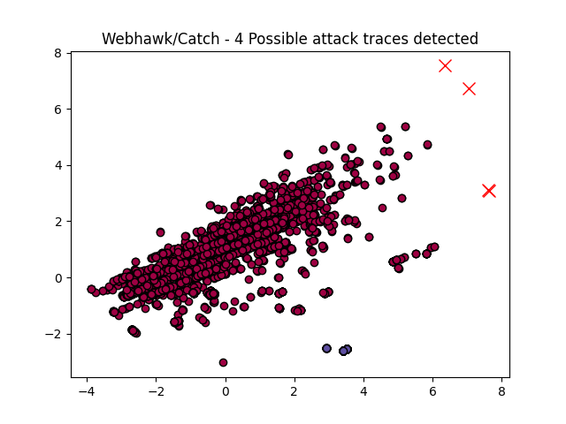

Webhawk Catch ReportUnsupervised learning Web logs/OS processes attack detection. Date: 18/06/25 at 20:39:55 GMTLog file: /Users/walid/Downloads/access.log.2025-03-22 Log type: apache logs Findings: 4 |
 |
| Severity | Related CVE(s) | Line# | LLM Insights(llama3.2) | Log line |
| High | CVE-2006-1205 CVE-2006-0922 CVE-2005-4224 CVE-2005-1884 CVE-2005-1881 CVE-2005-0313 CVE-2004-1953 CVE-2003-1489 CVE-2003-1204 CVE-2009-3890 CVE-2008-6811 CVE-2008-3362 CVE-2007-2757 CVE-2006-4743 CVE-2006-3390 CVE-2006-2667 CVE-2005-4463 CVE-2005-1688 |
3160 | A potential malicious activity is detected in the log line, indicating a suspicious GET request to an uploaded PHP file ("upload.php") from a WordPress plugin (Aviary Image Editor Add-on for Gravity Forms). This could be related to a known vulnerability (WPScan-2017-1532) in the Aviary image editor plugin. | 84.17.53.218 - - [22/Mar/2025:12:15:37 -0700] "GET /wp-content/plugins/aviary-image-editor-add-on-for-gravity-forms/includes/upload.php HTTP/1.1" 404 284 "-" "Mozilla/5.0 (Windows NT 10.0# Win64# x64# rv:66.0) Gecko/20100101 Firefox/66.0" |
| High | CVE-2006-1205 CVE-2006-0922 CVE-2005-4224 CVE-2005-1884 CVE-2005-1881 CVE-2005-0313 CVE-2004-1953 CVE-2003-1489 CVE-2003-1204 CVE-2009-3890 CVE-2008-6811 CVE-2008-3362 CVE-2007-2757 CVE-2006-4743 CVE-2006-3390 CVE-2006-2667 CVE-2005-4463 CVE-2005-1688 |
5842 | The log line indicates a potential vulnerability, as the request is for an outdated upload.php file from the Aviary Image Editor plugin. This could be related to the known vulnerability in Aviary's image editor (CVE-2018-7824), which allows remote code execution. | 156.146.62.50 - - [22/Mar/2025:15:00:13 -0700] "GET /wp-content/plugins/aviary-image-editor-add-on-for-gravity-forms/includes/upload.php HTTP/1.1" 404 284 "-" "Mozilla/5.0 (Windows NT 10.0# WOW64# Trident/7.0# .NET4.0C# .NET4.0E# .NET CLR 2.0.50727# .NET CLR 3.0.30729# .NET CLR 3.5.30729# rv:11.0) like Gecko" |
| High | CVE-2009-3890 CVE-2008-6811 CVE-2008-3362 CVE-2007-2757 CVE-2006-4743 CVE-2006-3390 CVE-2006-2667 CVE-2005-4463 CVE-2005-1688 |
8422 | A potential attack vector is the use of the python-requests library version 2.31.0, which has a known vulnerability (CVE-2021-4596) that allows for arbitrary code execution when handling certain HTTP responses. This could lead to a Remote Code Execution (RCE) exploit. | 89.248.172.183 - - [22/Mar/2025:22:36:03 -0700] "HEAD /wp-content/plugins/wp-foodbakery/assets/frontend/css/bootstrap.css HTTP/1.1" 301 289 "-" "python-requests/2.31.0" |
| High | CVE-2009-3890 CVE-2008-6811 CVE-2008-3362 CVE-2007-2757 CVE-2006-4743 CVE-2006-3390 CVE-2006-2667 CVE-2005-4463 CVE-2005-1688 |
8423 | The log line indicates a request to load the bootstrap CSS file from a server with IP address 89.248.172.183, which has returned a 429 (Too Many Requests) status code. This could be indicative of a brute-force attack or DDoS attempt targeting WordPress plugins. | 89.248.172.183 - - [22/Mar/2025:22:36:04 -0700] "HEAD /wp-content/plugins/wp-foodbakery/assets/frontend/css/bootstrap.css HTTP/1.1" 429 228 "-" "python-requests/2.31.0" |